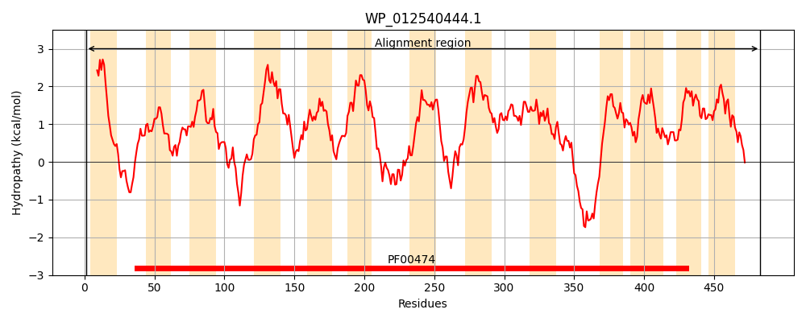
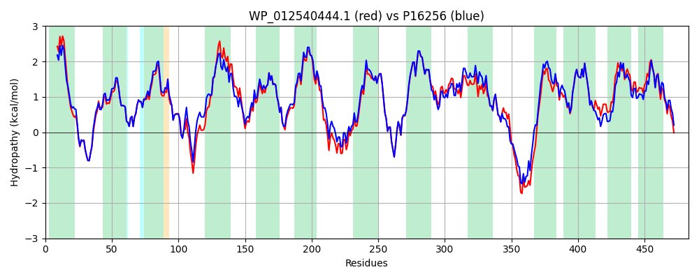

Hit Accession: P16256
Hit TCID: 2.A.21.1.1
Hit Description: gnl|BL_ORD_ID|9210 gnl|TC-DB|P16256|2.A.21.1.1 SODIUM/PANTOTHENATE SYMPORTER (PANTOTHENATE PERMEASE) - Escherichia coli.
Mach Len: 483
e:0.000000
Query TMS Count : 13
Hit TMS Count: 13
TMS-Overlap Score: 12.700000
Predicted Substrates:CHEBI:14739;pantothenate
BLAST Alignment:
Score: 2119 , Bit scores: 820 bits, E-value: 0.0e+00, Alignment length: 483, Percentage identity: 85
Query: 1 MQLEIIVVLIAYLFVVFGLSIYAMRKRSTGNFLSEYFLGSRSMGGFVLAMTLTATYISASSFIGGPGAAYKYGLGWVLLAMIQVPTIWLSLGILGKKFAILARRYNAITLNDMLQARYQSRAVVWIASVSLLVAFVGAIAVQFIGGARLLETAAGIKYETGLLIFGITIALYTAFGGFRASVLNDTMQGMVMLIGTIVLLVGVVHAAGGLHQAVDTLQRIDPQLVSPHGADDILSPTFMTSFWVLVCFGVIGLPHTAVRCISYKDSKAVHRGIVIGTIVVAILMFGMHLAGALGRAVLPGLTVPDLVIPTLMVQVLPPWAAGLFLAAPMAAIMSNVNAHLLQASATIIKDLWLSAQPTKKRNEQKLKRISTIATLVLGILMMLAAWRPPEMIIWLNLLAFGGLEAVFLWPLVLGLYWERANAAGALSAMLVGGVLYAVLATFHIQFLGFHPIVPSLLLSLLAFVVGNRFGQPVPPAPVMTTDK 483
MQLE+I+ L+AYL VVFG+S+YAMRKRSTG FL+EYFLGSRSMGG VLAMTLTATYISASSFIGGPGAAYKYGLGWVLLAMIQ+P +WLSLGILGKKFAILARRYNA+TLNDML ARYQSR +VW+AS+SLLVAFVGA+ VQFIGGARLLETAAGI YETGLLIFGI+IALYTAFGGFRASVLNDTMQG+VMLIGT+VLL+GVVHAAGGL AV TLQ IDPQLV+P GADDILSP FMTSFWVLVCFGVIGLPHTAVRCISYKDSKAVHRGI+IGTIVVAILMFGMHLAGALGRAV+P LTVPDLVIPTLMV+VLPP+AAG+FLAAPMAAIMS +NA LLQ+SATIIKDL+L+ +P + +NE +LKR+S + TLVLG L++LAAW+PPEMIIWLNLLAFGGLEAVFLWPLVLGLYWERANA GALSAM+VGGVLYAVLAT +IQ+LGFHPIVPSLLLSLLAF+VGNRFG VP A V+TTDK
Sbjct: 1 MQLEVILPLVAYLVVVFGISVYAMRKRSTGTFLNEYFLGSRSMGGIVLAMTLTATYISASSFIGGPGAAYKYGLGWVLLAMIQLPAVWLSLGILGKKFAILARRYNAVTLNDMLFARYQSRLLVWLASLSLLVAFVGAMTVQFIGGARLLETAAGIPYETGLLIFGISIALYTAFGGFRASVLNDTMQGLVMLIGTVVLLIGVVHAAGGLSNAVQTLQTIDPQLVTPQGADDILSPAFMTSFWVLVCFGVIGLPHTAVRCISYKDSKAVHRGIIIGTIVVAILMFGMHLAGALGRAVIPDLTVPDLVIPTLMVKVLPPFAAGIFLAAPMAAIMSTINAQLLQSSATIIKDLYLNIRPDQMQNETRLKRMSAVITLVLGALLLLAAWKPPEMIIWLNLLAFGGLEAVFLWPLVLGLYWERANAKGALSAMIVGGVLYAVLATLNIQYLGFHPIVPSLLLSLLAFLVGNRFGTSVPQATVLTTDK 483 | Protein Hydropathy Plots: |
|---|
|  |  |
Pairwise Alignment-Hydropathy Plot:
|
|---|
|  |